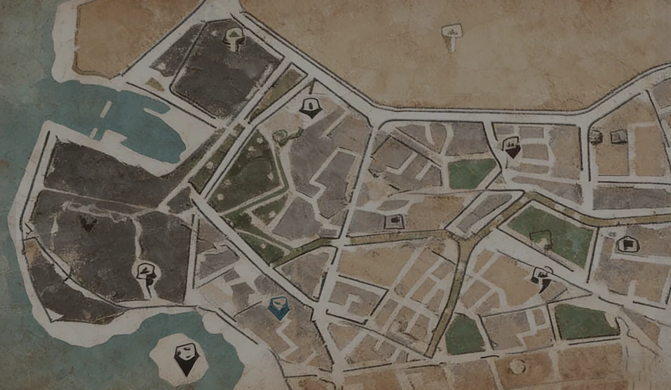

{{ areaLabelText }}
{{ state.campHeader }}
{{ state.shelterSmsHint }}
{{ item.name }}
{{ state.localText.newSuffix }}
{{ state.localText.comingSoonText }}
{{ item.fallEvac ? state.localText.evacText : state.localText.fallenTagText }}
🔥
{{ state.localText.damagedTagText }}
{{ fallCountdownTagText(item.fallInDays) }}
{{ aidUrgencyText(item.aidUrgency) }}
{{ defendText(item.defendTag) }}
✓ {{ state.localText.relievedText }}
{{ fallenStampText }}
{{ state.localText.darkText }}
{{ state.mapName }}
{{ state.chapterLabel }}
{{ state.localText.timeDuringLabel }}
{{ state.timeDuring }}
{{ state.localText.carryLabel }}
{{ state.itemRequire }}
{{ state.localText.requireLabel }}
{{ state.openRequire }}
{{ state.localText.dailyLabel }}
{{ (state.doneToday ? 0 : 1) + '/1' }}
{{ state.localText.produceLabel }}
{{ p }}
{{ state.localText.tradeCatLabel }}
{{ c.n }}
+{{ state.tradeCatMore }}
{{ state.stockPct }}%
{{ status.title }}
{{ status.camp }}
{{ status.time }}
{{ status.state }}
{{ p }}
{{ r.k }}
{{ r.v }}
{{ status.quote }}
{{ status.note }}
{{ status.callAid.reason }}
{{ fallenNoticeLabel }}
{{ fallenDayText }}{{ state.fallEvac ? '' : state.localText.fallenNoticeText }}
{{ fallenDayText }}{{ state.fallEvac ? '' : state.localText.fallenNoticeText }}
{{ state.localText.damagedNoticeLabel }}
{{ damagedNoticeText }}
{{ damagedNoticeText }}
{{ state.localText.fallCountdownLabel }}
{{ fallCountdownText }}
{{ fallCountdownText }}
{{ state.localText.unlockHintLabel }}
{{ state.unlockHint }}
{{ state.unlockHint }}
✓
{{ cond.label }}
{{ cond.text }}
{{ state.description }}
{{ tripIndexLine }}{{ tripCostLine }}
{{ aidToast }}
{{ tripIndexLine }}
{{ tripCostLine }}
{{ tripRp }}
{{ aidConfirm.title }}
{{ state.localText.callAidBody }}
{{ state.localText.callAidCost }}